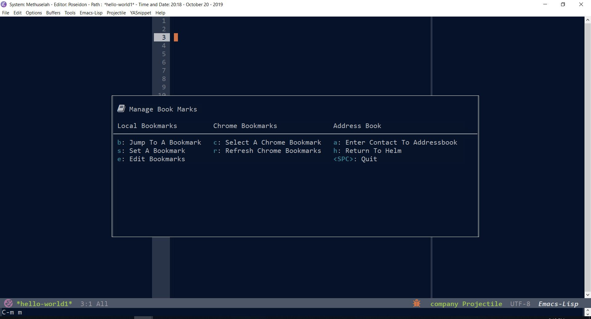

Jumping To Directories In Emacs
If you want to accomplish things efficiently with your computer, you will benefit from mastering a text editor. I use emacs as a general project manager for web development, writing, and organizing thoughts, materials, and actions. Jumping to and from directories and files enables quickly me to get things done more efficiently. To do this I use a few different packages and functions. They are:
Bookmarks
Projectile
Capture
Dired Mode
Hardwired Jumps
File-find functions: Helm-find, Better-helm, Ido-find etc.
Bookmarks is a package built into emacs. I use it the most. Projectile is a package you add to your emacs configuration. I use projectile a lot as well. It's more useful if you have really large projects with a lot of files in them. If I cover projectile, I'll do it at another time.Org-capture is absolutely amazing. I literally use it every 8 minutes. I absolutely love it. I'll discuss it at another time. Hardwired jumps (that's what I call them) are just calls to dired mode with a path added to a function and triggered through an interface. I use those in a few hydras and there are a few packages that use them as well (like easy-hugo, for example). The find-file functions and dired mode are similar. They are calls you make from the minibuffer to bring up searches. If I do another post about finding files in emacs I'll discuss those as well.
I call the bookmark functions through a bookmark hydra. It has in it chrome bookmarks, helm-address-bookmark (which is just basically bookmarks with another name), and bookmarks. Chrome bookmarks enable you to access your web bookmarks from within emacs. The other bookmarks jump you to a directory or file. You set the bookmark, then jump to it. You can set the functions to a shortcut if you like. I just add them to my hydra network. Here's an image of the bookmarks and some configuration code.

Here's the chrome bookmarks config code:
| |
Helm bookmarks I think you have to download to your path and require. You can get the file here: Helm Bookmarks I add all paths to variables in one early section of my configuration. That way they are easy to change. Later I require the file from the path.
| |
And here's the configuration for the bookmarks hydra (you need all-the-icons installed and some icon configuration code to get the icon on the hydra.)
| |
Here's a video clip:
comments powered by Disqus